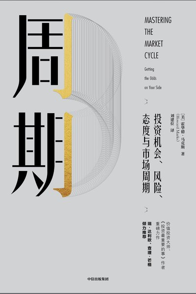

封面图片：豆瓣图书，仅用于书目识别
市场结构与周期 · 核心原典
周期
Mastering the Market Cycle
核心命题：周期定位决定风险收益比：知道“现在处于周期什么位置”，比预测明天涨跌更重要。
“我们无法预测，但我们可以准备。”
最有价值的技术观点
以下 5 条按“可直接用于交易决策”的标准筛选，而不是按书中的篇幅。
01钟摆理论
市场情绪在“贪婪—恐惧”之间摆动，很少停留在中点；极端情绪往往对应极端价格。
02周期定位
用估值、信贷条件、投资者情绪判断周期位置；在别人贪婪时降低风险，在别人恐惧时增加风险。
03第二层思维
不是“这家公司好不好”，而是“价格是否已经反映了共识”；超额收益来自与共识不同的正确判断。
04风险是“永久性损失的概率”
波动不是风险，永久性资本损失才是；控制回撤比追求高收益更重要。
05防守优先
长期赢家往往不是收益最高的人，而是回撤最小、活得最久的人。
可执行要点
- 用估值分位 + 情绪指标判断周期位置。
- 在极端乐观时降低仓位，在极端悲观时提高仓位。
- 把“不亏大钱”放在“赚大钱”之前。